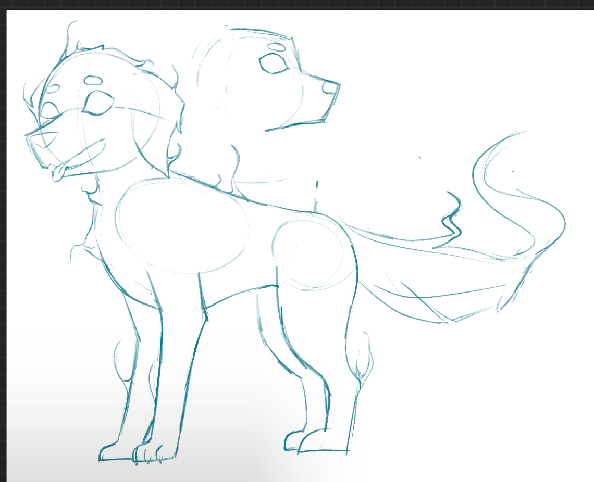

Son of Orpheus game demo
Son of Orpheus is a first person platformer game that some classmates and I are developing. The premise is based off of the myth of Orpheus, in which a man goes into the Greek Underworld to save his wife, with the only condition being that he cannot look back until they both reach the surface. In our game, the main character, Orpheo, died on his wedding and must now climb back up to the surface. The core mechanic in our game requires the player not to look back while progressing through the game. I mainly worked on the story and chracters, as well as a few small things like some of the dialogue.

Here is a finished design for the main character, Orpheo. The first design was all black and white, but I decided to add some color to the rose, shown in the second design. The third design is an idea for the lighting. Instead of carrying a lantern, Orpheo's rose glows. I had the idea that the souls of the dead would also have a glowing item with them to light their paths.
The second design is for a ghost dog that would guide Orpheo through different puzzles.
A test song by our audio guy: